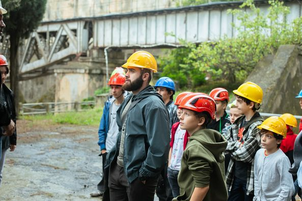
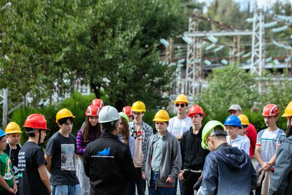

Goal-Oriented Academy • GOA - ში მონდომებული ბავშვები დასახულ მიზნებს აღწევენ
💪მათ დაბრკოლებები ვერ აჩერებთ
🧠აქ სწავლობენ საუკეთესო მენტორებისგან, ყალიბდებიან საუკეთესო ადამიანებად და იძენენ სანუკვარ თვისებებს.
📈GOA-ში თქვენი შვილი გახდება წარმატებული (100% გარანტია)
✅ჩვენთან თითოეულ მოსწავლეს ინდივიდუალური ყურადღება ექცევა და პერსონალურად ვეხმარებით ზრდა-განვითარებაში.
💚შემოგვიერთდით Goal-Oriented Academy • GOA-ში,
Nika Keshelava -ს დაარსებულ აკადემიაში
🟢2024 წლის იანვრის ბოლოს ვიწყებთ პროგრამირების კურსის ახალ ნაკადს 11-17 წლის ბავშვებისთვის.
🟢ასევე არის 18 + ჯგუფებიც, ზრდასრულთათვის
🟢ასევე ვასწავლით 7-10 წლის ბავშვებსაც ინდივიდუალურად
🟢გაკვეთილები ჩატარდება კვირაში ორჯერ, ან ერთხელ(როგორც აირჩევთ)
🟢კვირაში 2ჯერ:-- კურსის ღირებულება არის ფასდაკლებით: თვეში 290 ლარი, ნაცვლად 560 ლარისა.
🟢კვირაში 1ხელ:-- კურსის ღირებულება არის ფასდაკლებით: თვეში 160 ლარი, ნაცვლად 310 ლარისა.
🟢საბაზისო ეტაპის ხანგრძლივობა არის 1 წელი, ხოლო სიღრმისეული კურსი - 2.5 წელი(დამოკიდებულია მოსწავლის ინტერესებზე)
🟢წარმატებული სტუდენტები საქმდებიან Goal-Oriented Academy • GOA-ში და პარტნიორ კომპანიებში.
კონსულტაციისთვის მოგვწერეთ პირად შეტყობინებაში
online სწავლა, offline თავგადასავლები! 🌍
Goal-Oriented Academy • GOA-ში ჩვენ ხელახლა ვწერთ ტექნიკური განათლების სტანდარტებს. აი, რატომ არის ჩვენი მიდგომა განუმეორებელი:
🌟 1️⃣ ინოვაციური ჰიბრიდული სწავლება: ჩვენ არ ვართ მხოლოდ ონლაინ აკადემია; ჩვენ ვართ საზოგადოება, რომელსაც სჯერა კავშირის ძალის. ჩვენი უახლესი ჰიბრიდული მოდელი აერთიანებს ორივე სამყაროს საუკეთესოდ: ციფრულ კომფორტს და რეალურ სამყაროში თავგადასავლებს.
💻✈️ 2️⃣ ამქვეყნიური სიბრძნე: სანამ სხვები იცავენ თავიანთ საოფისე ფართების საზღვრებს, ჩვენ, ამასობაში, ჩვენს სტუდენტებს ამაღელვებელ მოგზაურობებზე ვატარებთ, თვალწარმტაცი მიმართულებით. ჩვენ ვქმნით დაუვიწყარ მოგონებებს, რომლებიც შთააგონებენ შემოქმედებითობას და მეგობრობას.
🌄🏖️ 3️⃣ უწყვეტი ობლიგაციების დამყარება: Goal-Oriented Academy • GOA-ში საქმე მხოლოდ პროგრამირებას არ ეხება; ეს არის მთელი ცხოვრების მანძილზე მეგობრობის დამყარება. ჩვენი მოგზაურობები ხელს უწყობს მეგობრობის გაღვივებას ჩვენს სტუდენტებს შორის, ქმნის ტექნიკური ენთუზიასტების გლობალურ ქსელს, რომლებიც მხარს უჭერენ და ეხმარებიან ერთმანეთს.
🤝🌐 4️⃣ მოქნილი ონლაინ სწავლება: ჩვენი ონლაინ პლატფორმა არის უმაღლესი დონის, რომელიც უზრუნველყოფს სწავლის მოქნილობას და მოხერხებულობას. თქვენ შეგიძლიათ ჩვენს კურსებზე წვდომა მსოფლიოს ნებისმიერი ადგილიდან
🌎💼 ნუ დაკმაყოფილდებით ჩვეულებრივს. შეუერთდით Goal-Oriented Academy • GOA-ს და განიცადეთ არაჩვეულებრივი! 🌠 გახსენით თქვენი პოტენციალი, დაუმეგობრდით სიცოცხლეს და აღმოაჩინეთ სამყარო პროგრამირების უნარების დაუფლებისას.
💻🌍 მზად ხართ ჩვენთან ერთად დაიწყოთ ეს წარმოუდგენელი მოგზაურობა? ერთად დავწეროთ მომავალი! 🚀🌟 შემოგვიერთდით და გახდით წარმატებული


💚🥰Goal-Oriented Academy • GOA, ბავშვებისთვის, საქართველოში საუკეთესო გარემოს ქმნის. ჩვენს გაკვეთილებზე ყოფნა თითოეული ბავშვის გულს ახარებს. მათ ერთი სული აქვთ როდის დადგება შემდეგი გაკვეთილი.
👐✍️ისინი ერთად ქმნიან დიად მომავალს. ჩვენი მთავარი მენტორი Nika Keshelava მუდამ ზრუნავს ბავშვების სულიერ და ფიზიკურ განვითარებაზე. აყენებს სწორ გზაზე და მუდმივად ეხმარება პრობლემების მოგვარებაში.
🌞🌅ყველა GOA-ელი ბავშვის მშობელი ბედნიერად და მშვიდად გრძნობს თავს, რადგან მათი შვილი სანდო ხელშია.
✍️შემოგვიერთდით Goal-Oriented Academy • GOA-ს სექტემბრის ჯგუფებში.
🧠ლოგიკურად, ადგილები შეზღუდულია.